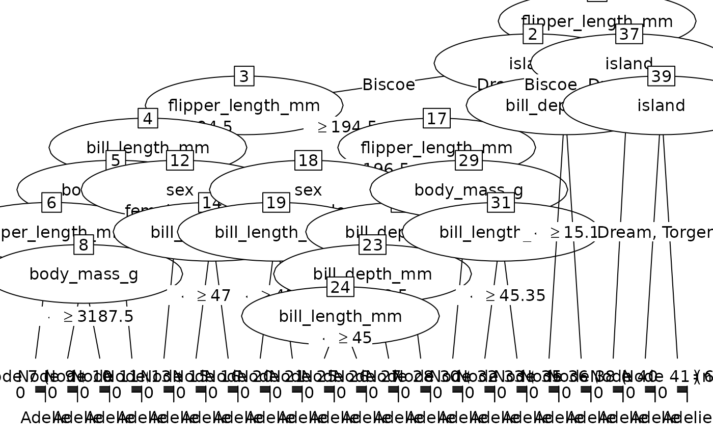

as.party.randomForest.RdConvert a single tree from a randomForest model to a party object for use with partykit visualization and analysis tools.
# S3 method for class 'randomForest'
as.party(obj, tree = 1L, data = NULL, ...)A randomForest object from the randomForest package.
Integer specifying which tree to convert (1-based indexing, default is 1). Must be between 1 and the number of trees in the forest.
Optional data.frame containing the training data. If NULL, a placeholder data.frame will be created with correct variable names but no observations. Providing data enables full party functionality including predictions.
Not currently used.
A party object from the partykit package.
The randomForest package stores trees in obj$forest as parallel matrices:
leftDaughter[i, tree]: 1-based row index of left child (0 = no child)
rightDaughter[i, tree]: 1-based row index of right child (0 = no child)
bestvar[i, tree]: 1-based variable index for split (0 for terminal)
xbestsplit[i, tree]: threshold value for split
nodestatus[i, tree]: node status (-1 = terminal, -3 = internal)
nodepred[i, tree]: prediction at node (for regression) or class (classification)
randomForest uses 1-based row indices for nodes (root is row 1)
Value 0 in leftDaughter/rightDaughter indicates no child
User-facing tree parameter uses 1-based indexing (R convention)
if (rlang::is_installed(c("randomForest", "palmerpenguins"))) {
# Classification example
data(penguins, package = "palmerpenguins")
penguins <- na.omit(penguins)
set.seed(2847)
rf <- randomForest::randomForest(species ~ ., data = penguins, ntree = 3)
# Convert first tree
party_tree <- as.party(rf, tree = 1L, data = penguins)
print(party_tree)
plot(party_tree)
# Predictions from party object
predict(party_tree, newdata = penguins[1:5, ])
# Regression example
data(mtcars)
set.seed(5193)
rf_reg <- randomForest::randomForest(mpg ~ ., data = mtcars, ntree = 3)
party_tree_reg <- as.party(rf_reg, tree = 1L, data = mtcars)
print(party_tree_reg)
}
#>
#> Model formula:
#> ~island + bill_length_mm + bill_depth_mm + flipper_length_mm +
#> body_mass_g + sex + year
#>
#> Fitted party:
#> [1] root
#> | [2] flipper_length_mm < 206.5
#> | | [3] island in Biscoe
#> | | | [4] flipper_length_mm < 194.5
#> | | | | [5] bill_length_mm < 42.35
#> | | | | | [6] body_mass_g < 3225
#> | | | | | | [7] flipper_length_mm < 186: Adelie (n = 10, err = 0.0%)
#> | | | | | | [8] flipper_length_mm >= 186
#> | | | | | | | [9] body_mass_g < 3187.5: Adelie (n = 5, err = 0.0%)
#> | | | | | | | [10] body_mass_g >= 3187.5: Adelie (n = 3, err = 33.3%)
#> | | | | | [11] body_mass_g >= 3225: Adelie (n = 59, err = 0.0%)
#> | | | | [12] bill_length_mm >= 42.35
#> | | | | | [13] sex in female, male: Chinstrap (n = 20, err = 0.0%)
#> | | | | | [14] sex in female, male
#> | | | | | | [15] bill_length_mm < 47.25: Adelie (n = 2, err = 0.0%)
#> | | | | | | [16] bill_length_mm >= 47.25: Chinstrap (n = 6, err = 0.0%)
#> | | | [17] flipper_length_mm >= 194.5
#> | | | | [18] flipper_length_mm < 196.5
#> | | | | | [19] sex in female, male
#> | | | | | | [20] bill_length_mm < 41.05: Adelie (n = 3, err = 0.0%)
#> | | | | | | [21] bill_length_mm >= 41.05: Chinstrap (n = 6, err = 0.0%)
#> | | | | | [22] sex in female, male
#> | | | | | | [23] bill_depth_mm < 20.3
#> | | | | | | | [24] bill_depth_mm < 18.5
#> | | | | | | | | [25] bill_length_mm < 45: Adelie (n = 3, err = 0.0%)
#> | | | | | | | | [26] bill_length_mm >= 45: Chinstrap (n = 1, err = 0.0%)
#> | | | | | | | [27] bill_depth_mm >= 18.5: Chinstrap (n = 4, err = 25.0%)
#> | | | | | | [28] bill_depth_mm >= 20.3: Adelie (n = 2, err = 0.0%)
#> | | | | [29] flipper_length_mm >= 196.5
#> | | | | | [30] body_mass_g < 3962.5: Chinstrap (n = 19, err = 15.8%)
#> | | | | | [31] body_mass_g >= 3962.5
#> | | | | | | [32] bill_length_mm < 45.35: Adelie (n = 8, err = 0.0%)
#> | | | | | | [33] bill_length_mm >= 45.35: Chinstrap (n = 11, err = 9.1%)
#> | | [34] island in Dream, Torgersen
#> | | | [35] bill_depth_mm < 15.15: NA (n = 0, err = NA)
#> | | | [36] bill_depth_mm >= 15.15: Adelie (n = 46, err = 0.0%)
#> | [37] flipper_length_mm >= 206.5
#> | | [38] island in Biscoe, Dream, Torgersen: Gentoo (n = 118, err = 0.0%)
#> | | [39] island in Biscoe, Dream, Torgersen
#> | | | [40] island in Biscoe: Chinstrap (n = 6, err = 16.7%)
#> | | | [41] island in Dream, Torgersen: Adelie (n = 1, err = 0.0%)
#>
#> Number of inner nodes: 20
#> Number of terminal nodes: 21

#>
#> Model formula:
#> ~cyl + disp + hp + drat + wt + qsec + vs + am + gear + carb
#>
#> Fitted party:
#> [1] root
#> | [2] cyl < 5
#> | | [3] disp < 101.55: 30.880 (n = 5, err = 24.7)
#> | | [4] disp >= 101.55
#> | | | [5] wt < 2.23: 26.000 (n = 1, err = 0.0)
#> | | | [6] wt >= 2.23
#> | | | | [7] disp < 143.75: 22.125 (n = 4, err = 1.8)
#> | | | | [8] disp >= 143.75: 24.400 (n = 1, err = 0.0)
#> | [9] cyl >= 5
#> | | [10] disp < 266.9
#> | | | [11] drat < 3.91: 20.240 (n = 5, err = 7.4)
#> | | | [12] drat >= 3.91: 18.500 (n = 2, err = 1.0)
#> | | [13] disp >= 266.9
#> | | | [14] qsec < 17.71
#> | | | | [15] qsec < 16.945: 14.780 (n = 5, err = 4.0)
#> | | | | [16] qsec >= 16.945
#> | | | | | [17] hp < 162.5: 15.200 (n = 1, err = 0.0)
#> | | | | | [18] hp >= 162.5: 17.260 (n = 5, err = 13.1)
#> | | | [19] qsec >= 17.71: 12.000 (n = 3, err = 15.4)
#>
#> Number of inner nodes: 9
#> Number of terminal nodes: 10